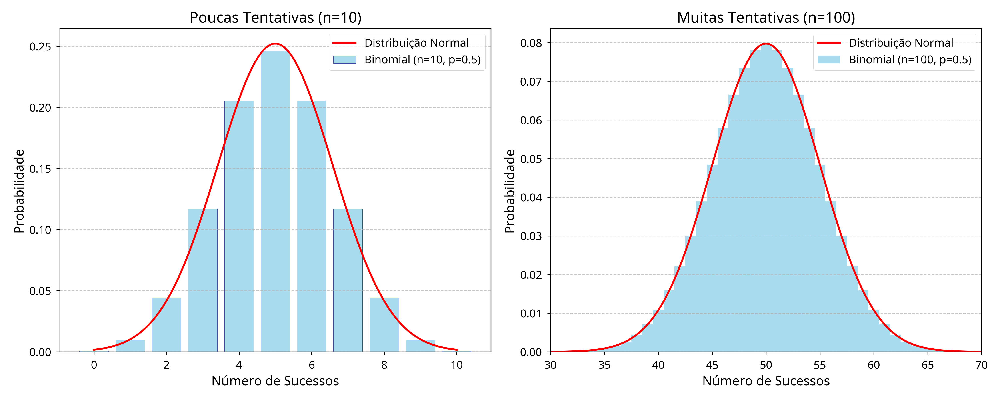
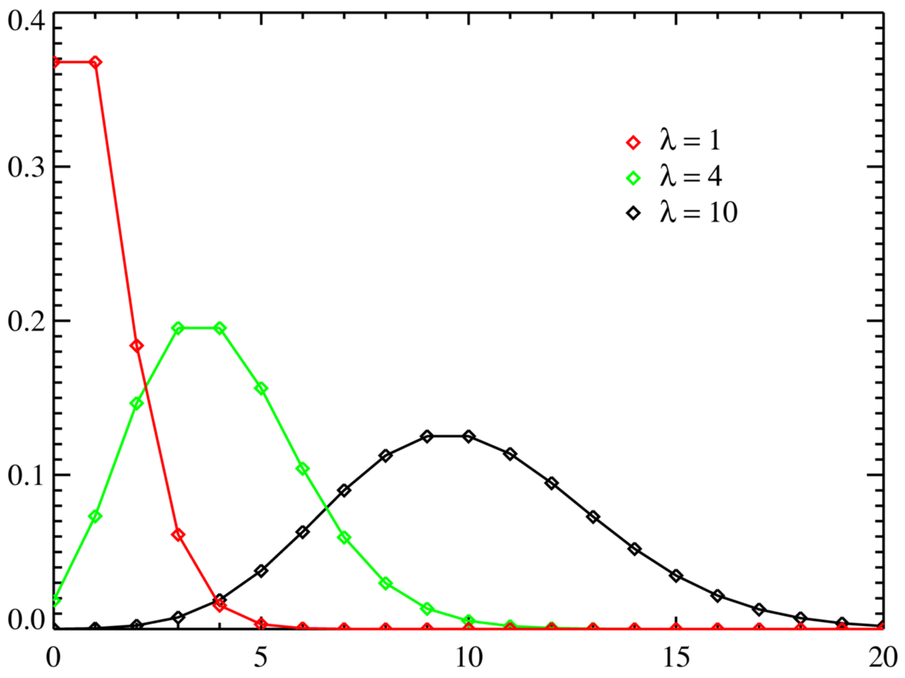

As distribuições de probabilidade são essenciais na Estatística, sendo utilizadas para analisar diversas áreas da ciência e da engenharia. Entre as várias distribuições destacam-se a Binomial e a Poisson. Em determinadas situações, essas distribuições podem ser aproximadas através da distribuição Normal, facilitando o cálculo probabilístico e análises estatísticas. Este relatório apresenta os fundamentos teóricos dessas aproximações, demonstrações matemáticas e aplicações utilizando a linguagem R.
2 🎯Objetivos
2.1 Objetivo Geral
Analisar como as distribuições Binomial e Poisson podem ser aproximadas à distribuição Normal.
2.2 Objetivos Específicos
Apresentar os conceitos das distribuições;
Demonstrar como ocorre as aproximações;
Aplicar exemplos práticos;
Implementar utilizando a linguagem R;
Comparar os resultados obtidos.
3 📝Metodologia
O trabalho foi desenvolvido por meio de estudos realizados em sala de aula e pesquisas bibliográficas sobre as distribuições Binomial, Poisson e Normal. Foram realizados cálculos e exemplos práticos utilizando a linguagem R e o pacote leem no RStudio, com o objetivo de compreender as aproximações das distribuições.
4 Distribuição Binomial
A distribuição Binomial é muito utilizada em experimentos aleatórios nos quais se possui apenas dois resultados possíveis no experimento (Sucesso ou Fracasso).
A função de probabilidade da distribuição Binomial é dada pela fórmula:
\[P(X = k)=\binom{n}{k}p^k(1-p)^{n-k}\] Onde:
\(X\): é a variável aleatória e representa o número de sucessos obtidos;
\(k\): representa a quantidade exata de sucessos desejada;
\(n\): o número total de tentativas;
\(p\): a probabilidade de acerto em cada tentativa;
\((1-p)\): é a probabildade de fracasso;
\(\binom{n}{k}\): calcula a quantidade de maneiras diferentes que o sucesso pode acontecer.
4.1 Aproximação Binomial pela Normal
A aproximação da Distribuição Binomial à Distribuição Normal acontece quando o número de tentativas fica muito grande. Nessa condição, a distribuição Binomial passa a apresentar formato ao da curva Normal.

Aproximação da distribuição Binomial à distribuição Normal
A variável Binomial pode ser analisada como a soma de várias variáveis aleatórias independentes de Bernoulli.
\[X=X_1+X_2+\cdots+X_n\] Segundo o Teorema Central do Limite, a soma de um grande número de variáveis aleatórias independentes tendem a seguir uma distribuição Normal, mesmo que as variáveis originais usadas sejam discretas.
A aproximação é vantajosa nos casos em que:
\[np \geq 5\]
e
\[n(1-p)\geq 5\] Com essas condições, a distribuição aproximada terá média:
\[\mu=np\]
e desvio padrão:
\[\sigma=\sqrt{np(1-p)}\] Exemplo Utilizando R:
Código
library(leem)# Aproximação Binomial pela Normal# Parâmetros da distribuiçãon <-100p <-0.1k <-15# Probabilidade Binomial exataprob_binomial <-pbinom(q = k,size = n,prob = p)# Média da aproximação Normalmedia <- n*p# Desvio padrãodesvio <-sqrt(n*p*(1-p))# Aproximação pela Normalprob_normal <-pnorm(q = k +0.5,mean = media,sd = desvio)# Resultadosprob_binomial
[1] 0.9601095
Código
prob_normal
[1] 0.9666235
Observa-se que a probabilidade calculada pela distribuição Binomial e pela aproximação Normal apresentaram valores próximos. Isso demonstra que, para valores de n grandes, a aproximação Normal fornece resultados condizentes.
5 Distribuição de Poisson
A distribuição de Poisson é uma distribuição de probabilidade discreta aplicada a cenários em que o interesse está em contabilizar o número de vezes que um evento ocorre dentro de um intervalo contínuo específico (seja de tempo, área, volume ou espaço).
A função de probabilidade da distribuição de Poisson é expressa por: \[P(X = k) = \frac{e^{-\lambda} \lambda^k}{k!}\]
Onde:
\(X\): é a variável aleatória que representa o número de ocorrências do evento;
\(k\): é o número de sucessos desejado (\(k = 0, 1, 2, \dots\));
\(\lambda\): é a taxa média de ocorrências no intervalo considerado (representa tanto a média quanto a variância da distribuição);
\(e\): é a constante de Euler, aproximadamente igual a 2,71828.
5.1 Aproximação da Poisson pela Normal
Assim como ocorre na distribuição Binomial, a distribuição de Poisson se aproxima de uma curva Normal à medida que o seu parâmetro central cresce. Quando a taxa média de ocorrências (\(\lambda\)) assume valores grandes, a assimetria característica da Poisson diminui, tornando a distribuição simétrica e com o formato de sino clássico da distribuição Normal. Essa convergência baseia-se no Teorema Central do Limite. Um processo de Poisson com parâmetro \(\lambda\) pode ser interpretado como a soma de \(\lambda\) processos independentes de Poisson com taxa igual a 1. À medida que \(\lambda \to \infty\), a distribuição dessa soma converge para uma distribuição Normal.

Aproximação da distribuição de Poisson à distribuição Normal
A aproximação pela Normal é considerada robusta e recomendada quando a taxa média atende ao seguinte critério:
\[\lambda \geq 10\]
Sob essa condição, a distribuição Normal aproximada assumirá os seguintes parâmetros:
Média:
\[\mu = \lambda\]
Desvio padrão:
\[\sigma = \sqrt{\lambda}\]
5.2 Correção de Continuidade
Como estamos utilizando uma distribuição contínua (Normal) para aproximar uma distribuição discreta (Poisson ou Binomial), é indispensável aplicar a correção de continuidade. Isso consiste em ajustar os limites do intervalo discreto por um fator de \(\pm 0,5\) para que a área sob a curva contínua represente fielmente a probabilidade acumulada dos degraus discretos.
Exemplo Utilizando R:
Código
library(leem)# Aproximação da Poisson pela Normal# Parâmetros da distribuiçãolambda <-16# Taxa média de ocorrências (satisfaz lambda >= 10)k <-20# Deseja-se calcular P(X <= 20)# Probabilidade Poisson exataprob_poisson <-ppois(q = k, lambda = lambda)# Média da aproximação Normalmedia_p <- lambda# Desvio padrão da aproximação Normaldesvio_p <-sqrt(lambda)# Aproximação pela Normal (aplicando correção de continuidade: k + 0.5)prob_normal_p <-pnorm(q = k +0.5, mean = media_p, sd = desvio_p)# Resultadosprob_poisson
[1] 0.868168
Código
prob_normal_p
[1] 0.8697055
Comparação e Discussão dos Resultados:
Caso Binomial (\(n = 100\), \(p = 0.1\)):
As condições de validação foram atendidas: \(np = 10 \geq 5\) e \(n(1-p) = 90 \geq 5\). A probabilidade exata calculada via pbinom e a estimada via pnorm (com correção de continuidade) apresentam divergências mínimas (na ordem de casas decimais avançadas), o que valida a aproximação.
Caso Poisson (\(\lambda = 16\)):
A condição estabelecida foi atendida: \(\lambda = 16 \geq 10\).O cálculo exato por ppois e a aproximação por pnorm resultam em valores extremamente próximos. A inclusão do fator de \(+0,5\) garante que o erro de discretização seja mitigado com eficácia.
6 🗪 Resultados e Discussão
7 💡 Conclusão
8 📑 Referências
Código fonte
---# Só mude aqui!!!!author: "Igor e Lucas"title: "Relatório 05: Aproximação das Distribuições Binomial e Poisson à Distribuição Normal"bibliography: referencias.bib# A partir daqui nao faca alteracoes!!!!!link-citations: truecsl: associacao-brasileira-de-normas-tecnicas-ipea.cslsubtitle: "<a href='https://bendeivide.github.io/courses/epaec/' target='_blank'>Estatística e Probabilidade</a> </br> <a href='https://bendeivide.github.io' target='_blank'>Prof. Ben Dêivide (DEFIM/CAP/UFSJ)</a>"include-before-body: header.htmldate: todaylang: pt-BRformat: html: toc: true number-sections: true theme: bootstrap #css: styles.css code-fold: true code-tools: trueexecute: echo: true warning: false message: false---## 📢IntroduçãoAs distribuições de probabilidade são essenciais na Estatística, sendo utilizadas para analisar diversas áreas da ciência e da engenharia. Entre as várias distribuições destacam-se a Binomial e a Poisson. Em determinadas situações, essas distribuições podem ser aproximadas através da distribuição Normal, facilitando o cálculo probabilístico e análises estatísticas. Este relatório apresenta os fundamentos teóricos dessas aproximações, demonstrações matemáticas e aplicações utilizando a linguagem R.## 🎯Objetivos### Objetivo GeralAnalisar como as distribuições Binomial e Poisson podem ser aproximadas à distribuição Normal.### Objetivos Específicos- Apresentar os conceitos das distribuições;- Demonstrar como ocorre as aproximações; - Aplicar exemplos práticos;- Implementar utilizando a linguagem R;- Comparar os resultados obtidos.## 📝Metodologia O trabalho foi desenvolvido por meio de estudos realizados em sala de aula e pesquisas bibliográficas sobre as distribuições Binomial, Poisson e Normal. Foram realizados cálculos e exemplos práticos utilizando a linguagem R e o pacote leem no RStudio, com o objetivo de compreender as aproximações das distribuições.## Distribuição BinomialA distribuição Binomial é muito utilizada em experimentos aleatórios nos quais se possui apenas dois resultados possíveis no experimento (Sucesso ou Fracasso).A função de probabilidade da distribuição Binomial é dada pela fórmula:$$P(X = k)=\binom{n}{k}p^k(1-p)^{n-k}$$Onde:* $X$: é a variável aleatória e representa o número de sucessos obtidos;* $k$: representa a quantidade exata de sucessos desejada; * $n$: o número total de tentativas;* $p$: a probabilidade de acerto em cada tentativa;* $(1-p)$: é a probabildade de fracasso;* $\binom{n}{k}$: calcula a quantidade de maneiras diferentes que o sucesso pode acontecer.### Aproximação Binomial pela NormalA aproximação da Distribuição Binomial à Distribuição Normal acontece quando o número de tentativas fica muito grande. Nessa condição, a distribuição Binomial passa a apresentar formato ao da curva Normal.A variável Binomial pode ser analisada como a soma de várias variáveis aleatórias independentes de Bernoulli. $$X=X_1+X_2+\cdots+X_n$$Segundo o Teorema Central do Limite, a soma de um grande número de variáveis aleatórias independentes tendem a seguir uma distribuição Normal, mesmo que as variáveis originais usadas sejam discretas.A aproximação é vantajosa nos casos em que: $$np \geq 5$$e$$n(1-p)\geq 5$$Com essas condições, a distribuição aproximada terá média:$$\mu=np$$e desvio padrão:$$\sigma=\sqrt{np(1-p)}$$Exemplo Utilizando R:```{R}library(leem)# Aproximação Binomial pela Normal# Parâmetros da distribuiçãon <-100p <-0.1k <-15# Probabilidade Binomial exataprob_binomial <-pbinom(q = k,size = n,prob = p)# Média da aproximação Normalmedia <- n*p# Desvio padrãodesvio <-sqrt(n*p*(1-p))# Aproximação pela Normalprob_normal <-pnorm(q = k +0.5,mean = media,sd = desvio)# Resultadosprob_binomialprob_normal```Observa-se que a probabilidade calculada pela distribuição Binomial e pela aproximação Normal apresentaram valores próximos. Isso demonstra que, para valores de n grandes, a aproximação Normal fornece resultados condizentes.## Distribuição de Poisson A distribuição de Poisson é uma distribuição de probabilidade discreta aplicada a cenários em que o interesse está em contabilizar o número de vezes que um evento ocorre dentro de um intervalo contínuo específico (seja de tempo, área, volume ou espaço).A função de probabilidade da distribuição de Poisson é expressa por: $$P(X = k) = \frac{e^{-\lambda} \lambda^k}{k!}$$Onde:* $X$: é a variável aleatória que representa o número de ocorrências do evento;* $k$: é o número de sucessos desejado ($k = 0, 1, 2, \dots$);* $\lambda$: é a taxa média de ocorrências no intervalo considerado (representa tanto a média quanto a variância da distribuição);* $e$: é a constante de Euler, aproximadamente igual a 2,71828.### Aproximação da Poisson pela NormalAssim como ocorre na distribuição Binomial, a distribuição de Poisson se aproxima de uma curva Normal à medida que o seu parâmetro central cresce. Quando a taxa média de ocorrências ($\lambda$) assume valores grandes, a assimetria característica da Poisson diminui, tornando a distribuição simétrica e com o formato de sino clássico da distribuição Normal. Essa convergência baseia-se no Teorema Central do Limite. Um processo de Poisson com parâmetro $\lambda$ pode ser interpretado como a soma de $\lambda$ processos independentes de Poisson com taxa igual a 1. À medida que $\lambda \to \infty$, a distribuição dessa soma converge para uma distribuição Normal.A aproximação pela Normal é considerada robusta e recomendada quando a taxa média atende ao seguinte critério: $$\lambda \geq 10$$Sob essa condição, a distribuição Normal aproximada assumirá os seguintes parâmetros:Média: $$\mu = \lambda$$Desvio padrão: $$\sigma = \sqrt{\lambda}$$### Correção de ContinuidadeComo estamos utilizando uma distribuição contínua (Normal) para aproximar uma distribuição discreta (Poisson ou Binomial), é indispensável aplicar a correção de continuidade. Isso consiste em ajustar os limites do intervalo discreto por um fator de $\pm 0,5$ para que a área sob a curva contínua represente fielmente a probabilidade acumulada dos degraus discretos.Exemplo Utilizando R:```{R}library(leem)# Aproximação da Poisson pela Normal# Parâmetros da distribuiçãolambda <-16# Taxa média de ocorrências (satisfaz lambda >= 10)k <-20# Deseja-se calcular P(X <= 20)# Probabilidade Poisson exataprob_poisson <-ppois(q = k, lambda = lambda)# Média da aproximação Normalmedia_p <- lambda# Desvio padrão da aproximação Normaldesvio_p <-sqrt(lambda)# Aproximação pela Normal (aplicando correção de continuidade: k + 0.5)prob_normal_p <-pnorm(q = k +0.5, mean = media_p, sd = desvio_p)# Resultadosprob_poissonprob_normal_p```* **Comparação e Discussão dos Resultados:*** Caso Binomial ($n = 100$, $p = 0.1$):As condições de validação foram atendidas: $np = 10 \geq 5$ e $n(1-p) = 90 \geq 5$. A probabilidade exata calculada via pbinom e a estimada via pnorm (com correção de continuidade) apresentam divergências mínimas (na ordem de casas decimais avançadas), o que valida a aproximação.* Caso Poisson ($\lambda = 16$):A condição estabelecida foi atendida: $\lambda = 16 \geq 10$.O cálculo exato por ppois e a aproximação por pnorm resultam em valores extremamente próximos. A inclusão do fator de $+0,5$ garante que o erro de discretização seja mitigado com eficácia.## 🗪 Resultados e Discussão## 💡 Conclusão## 📑 Referências